La ecología es la rama de la biología que estudia las relaciones de los diferentes seres vivos entre sí y con su entorno: «la biología de los ecosistemas» (Margalef, 1998, p. 2). Estudia cómo estas interacciones entre los organismos y su ambiente afectan a propiedades como la distribución o la abundancia. En el ambiente se incluyen las propiedades físicas y químicas que pueden ser descritas como la suma de factores abióticos locales, como el clima y la geología, y los demás organismos que comparten ese hábitat (factores bióticos). Los ecosistemas están compuestos de partes que interactúan dinámicamente entre ellas junto con los organismos, las comunidades que integran, y también los componentes no vivos de su entorno. Los procesos del ecosistema, como la producción primaria, la pedogénesis, el ciclo de nutrientes, y las diversas actividades de construcción del hábitat, regulan el flujo de energía y materia a través de un entorno. Estos procesos se sustentan en los organismos con rasgos específicos históricos de la vida, y la variedad de organismos que se denominan biodiversidad. La visión integradora de la ecología plantea el estudio científico de los procesos que influyen en la distribución y abundancia de los organismos, así como las interacciones entre los organismos y la transformación de los flujos de energía. La ecología es un campo interdisciplinario que incluye a la biología y las ciencias de la Tierra.
¿Por qué son importantes los recursos naturales? El medio ambiente es la fuente de todos los recursos naturales utilizados por el hombre de hoy, y es indispensable tener una actitud de defensa, protección y mejoramiento hacia él. Podemos clasificar los recursos naturales en dos grandes grupos: recursos naturales renovables y recursos naturales no renovables. Los recursos naturales no renovables son aquellos cuyos procesos de formación tarda miles de millones de años, podemos decir que son finitos y su explotación conduce al agotamiento,tal es el caso de los minerales como el hierro, el petróleo, el carbón y el oro. Debemos promover la defensa y mejoramiento de los recursos naturales, con el fin de evitar abusos que puedan romper el equilibrio natural. Deben ser utilizados sabiamente para que las generaciones futuras no se vean sometidas a la escasez y falta de recursos que degeneran siempre en crisis económicas muy difíciles de superar. Igualmente, evitamos la contaminación y aseguramos la existencia de recursos indispensables para la existencia humana.
El medio ambiente es la fuente de todos los recursos naturales utilizados por el hombre de hoy, y es indispensable tener una actitud de defensa, protección y mejoramiento hacia él. Podemos clasificar los recursos naturales en dos grandes grupos: recursos naturales renovables y recursos naturales no renovables. Los recursos naturales no renovables son aquellos cuyos procesos de formación tarda miles de millones de años, podemos decir que son finitos y su explotación conduce al agotamiento,tal es el caso de los minerales como el hierro, el petróleo, el carbón y el oro. Debemos promover la defensa y mejoramiento de los recursos naturales, con el fin de evitar abusos que puedan romper el equilibrio natural. Deben ser utilizados sabiamente para que las generaciones futuras no se vean sometidas a la escasez y falta de recursos que degeneran siempre en crisis económicas muy difíciles de superar. Igualmente, evitamos la contaminación y aseguramos la existencia de recursos indispensables para la existencia humana.
Los recursos no renovables, también conocidos como recursos agotables, son aquellos que existen en cantidades limitadas en la naturaleza. Algunos ejemplos de los recursos no renovables son el petróleo, los minerales, los metales, el gas natural, así como otros productos derivados de los combustibles fósiles, como la gasolina o el diésel. Los recursos no renovables son consumidos de manera más acelerada en comparación al tiempo que llevan para formarse en la naturaleza, es decir, su proceso de formación puede tardar millones de años y su explotación llega al desaparecimiento de su fuente, lo que conlleva al desaparecimiento de ciertos recursos. Como tal, los recursos no renovables son aquellos que no pueden ser regenerados o producidos a velocidad superior que la de su consumo, debido a que la naturaleza no los puede regenerar tan rápido como su alta demanda por el ser humano. 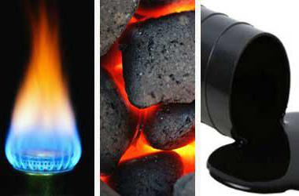 Lista de cada recurso Carbon 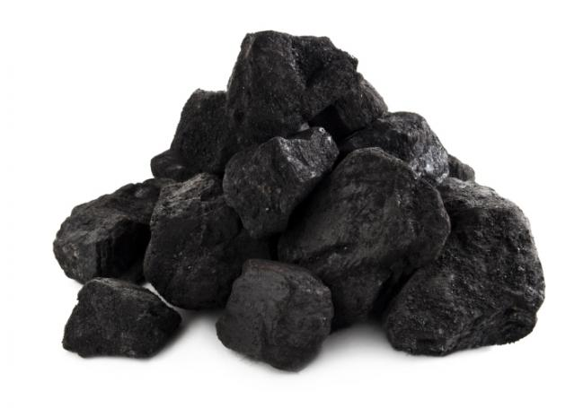 El carbón o carbón mineral es una roca sedimentaria organógena de color negro, muy rica en carbono y con cantidades variables de otros elementos, principalmente hidrógeno, azufre, oxígeno y nitrógeno, utilizada como combustible fósil.1 La mayoría del carbón explotado se formó a partir de los vegetales que crecieron durante los períodos Carbonífero (hace 359 a 299 millones de años) y Cretácico, al ser ambos períodos de gran extensión temporal y situarse gran parte de los medios sedimentarios favorables para su acumulación y conservación en latitudes intertropicales.2Es un recurso no renovable. Petroleo 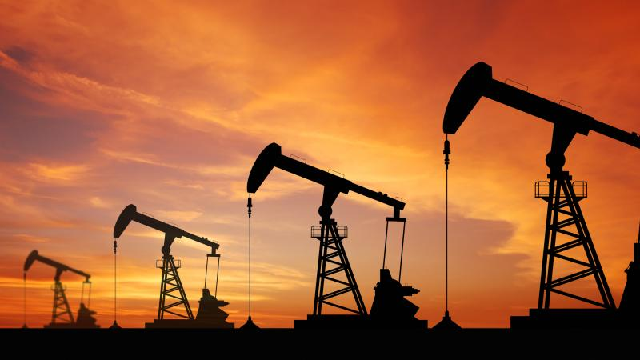 El petróleo es una mezcla de compuestos orgánicos, principalmente hidrocarburos insolubles en agua. También es conocido como oro negro, petróleo crudo o simplemente crudo. Aunque se desconocen los procesos químicos involucrados en su formación, se puede decir que se produce en el interior de la Tierra, por transformación de la materia orgánica acumulada en sedimentos del pasado geológico y puede acumularse en trampas geológicas naturales, de donde se extrae mediante la perforación de pozos. Gas Natural 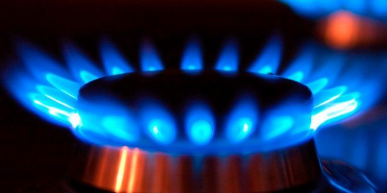 El gas natural es un hidrocarburo mezcla de gases ligeros de origen natural que contiene principalmente metano, y normalmente incluye cantidades variables de otros alcanos, y a veces un pequeño porcentaje de dióxido de carbono, nitrógeno, ácido sulfhídrico o helio. Se forma cuando varias capas de plantas en descomposición y materia animal se exponen a calor intenso y presión bajo la superficie de la Tierra durante millones de años. Uranio 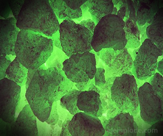 El uranio es un elemento químico metálico de color plateado-grisáceo de la serie de los actínidos, su símbolo químico es U y su número atómico es 92. Por ello posee 92 protones y 92 electrones, con una valencia de 6. Su núcleo puede contener entre 142 y 146 neutrones, sus isótopos más abundantes son el 238U que posee 146 neutrones y el 235U con 143 neutrones. El uranio tiene el mayor peso atómico de entre todos los elementos que se encuentran en la naturaleza. El uranio es aproximadamente un 70 % más denso que el plomo, aunque menos denso que el oro o el wolframio Acuiferos 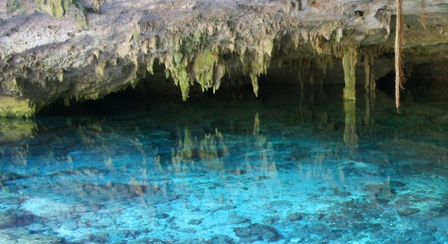 El agua subterránea representa una fracción importante de la masa de agua presente en los continentes, y se aloja en los acuíferos bajo la superficie de la Tierra. El volumen del agua subterránea es mucho más importante que la masa de agua retenida en lagos o circulante, y aunque menor al de los mayores glaciares, las masas más extensas pueden alcanzar un millón o más de kilómetros cuadrados (como el Acuífero Guaraní). El agua del subsuelo es un recurso importante y de este se abastece a una tercera parte de la población mundial,1 pero de difícil gestión, por su sensibilidad a la contaminación y a la sobreexplotación. Hierro 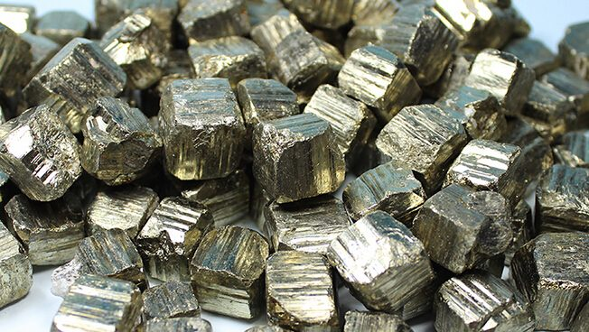 Estructura de un puente en hierro. El hierro o fierro12 es un elemento químico de número atómico 26 situado en el grupo 8, periodo 4 de la tabla periódica de los elementos. Su símbolo es Fe (del latín fĕrrum)1 y tiene una masa atómica de 55, 847u.34 Este metal de transición es el cuarto elemento más abundante en la corteza terrestre, representando un 5 % y, entre los metales, solo el aluminio es más abundante; y es el primero más abundante en masa planetaria, debido a que el planeta en su núcleo, se concentra la mayor masa de hierro nativo equivalente a un 70 %. El núcleo de la Tierra está formado principalmente por hierro y níquel en forma metálica, generando al moverse un campo magnético. Ha sido históricamente muy importante, y un período de la historia recibe el nombre de Edad de Hierro. Plata 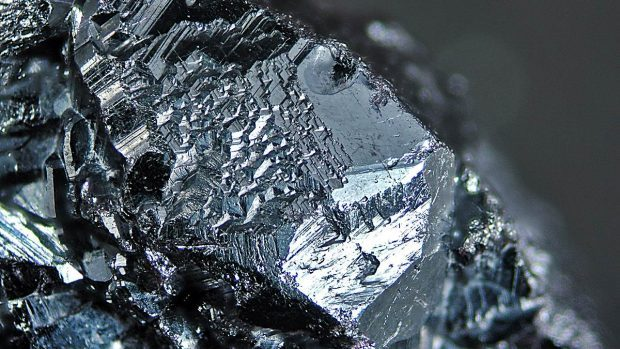 La plata es un elemento químico de número atómico 47 situado en el grupo 11 de la tabla periódica de los elementos. Su símbolo es Ag (procede del latín: argentum, "blanco" o "brillante"). Es un metal de transición blanco, brillante, blando, dúctil, maleable. Se encuentra en la naturaleza formando parte de distintos minerales (generalmente en forma de sulfuro) o como plata libre. Es muy común en la naturaleza, de la que representa una parte en 5 mil de corteza terrestre. La mayor parte de su producción se obtiene como subproducto del tratamiento de las minas de cobre, zinc, plomo y oro. Cobre 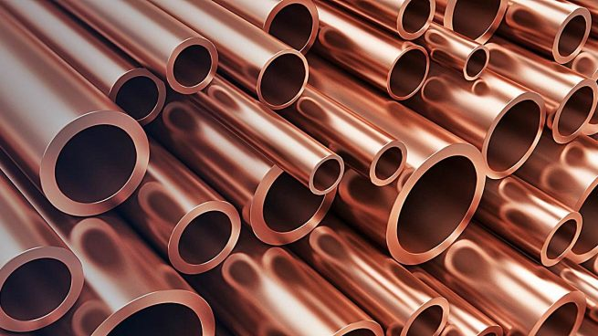 El cobre cuyo símbolo es Cu, es el elemento químico de número atómico 29. Se trata de un metal de transición de color rojizo y brillo metálico que, junto con la plata y el oro, forma parte de la llamada familia del cobre, se caracteriza por ser uno de los mejores conductores de electricidad (el segundo después de la plata). Gracias a su alta conductividad eléctrica, ductilidad y maleabilidad, se ha convertido en el material más utilizado para fabricar cables eléctricos y otros elementos eléctricos y componentes electrónicos. Oro 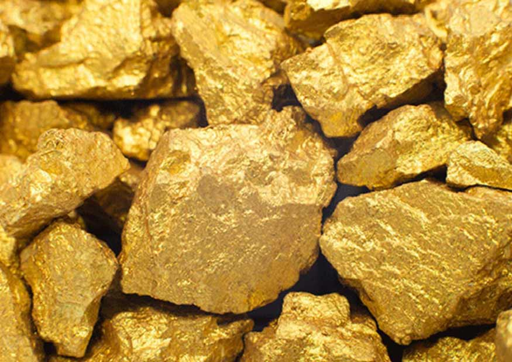 El oro es un elemento químico de número atómico 79, que está ubicado en el grupo 11 de la tabla periódica. Es un metal precioso blando de color amarillo. Su símbolo es Au (del latín aurum, ‘brillante amanecer’). Es un metal de transición blando, brillante, amarillo, pesado, maleable y dúctil. El oro no reacciona con la mayoría de los productos químicos, pero es sensible y soluble al cianuro, al mercurio, al agua regia, al cloro y a la lejía. Este metal se encuentra normalmente en estado puro, en forma de pepitas y depósitos aluviales. Es un elemento que se crea gracias a las condiciones extremas en el núcleo colapsante de las supernovas Niquel 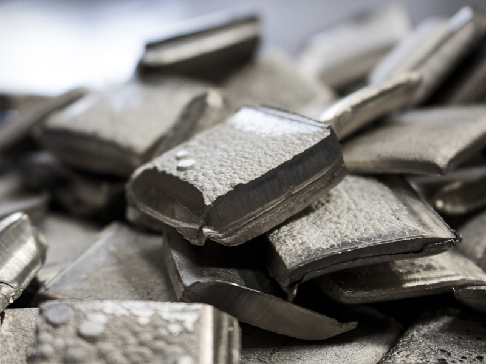 Es un metal de transición de color blanco con un ligerísimo tono amarillo, conductor de la electricidad y del calor, muy dúctil y maleable por lo que se puede laminar, pulir y forjar fácilmente, y presentando ferromagnetismo a temperatura ambiental. Es otro de los metales muy densos como el hierro, iridio y osmio. Se encuentra en distintos minerales, en meteoritos (aleado con hierro) y, en principio, hay níquel en el interior de la Tierra principalmente en su núcleo, donde se trata del segundo metal más abundante por detrás del hierro, metal con el que comparte numerosas características similares. Diamante 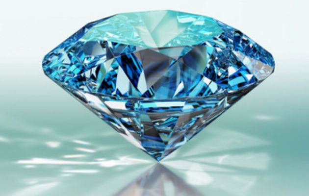 En la mineralogía, el diamante (del griego antiguo αδάμας, adámas, que significa invencible o inalterable) es un alótropo del carbono donde los átomos de carbono están dispuestos en una variante de la estructura cristalina cúbica centrada en la cara denominada «red de diamante». El diamante es la segunda forma más estable de carbono, después del grafito; sin embargo, la tasa de conversión de diamante a grafito es despreciable a condiciones ambientales. El diamante tiene renombre específicamente como un material con características físicas superlativas, muchas de las cuales derivan del fuerte enlace covalente entre sus átomos. En particular, el diamante tiene la más alta dureza y conductividad térmica de todos los materiales conocidos por el ser humano. Estas propiedades determinan que la aplicación industrial principal del diamante sea en herramientas de corte y de pulido además de otras aplicaciones. Platino 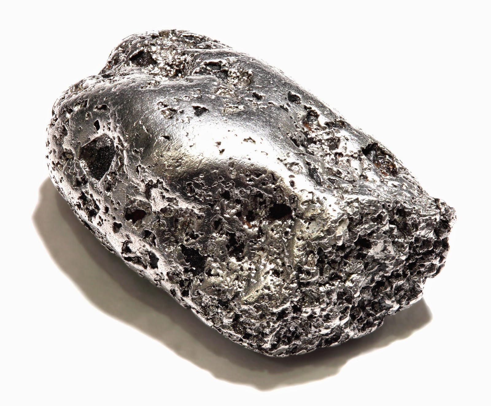 El platino es un elemento químico de número atómico 78, situado en el grupo 10 de la tabla periódica de los elementos. Su símbolo es Pt. Se trata de un metal de transición blanco grisáceo, precioso, pesado, maleable y dúctil. Es resistente a la corrosión y se encuentra en distintos minerales, frecuentemente junto con níquel y cobre; también se puede encontrar como metal. Se emplea en joyería, equipamiento de laboratorio, contactos eléctricos, empastes y catalizadores de automóviles. Grafito 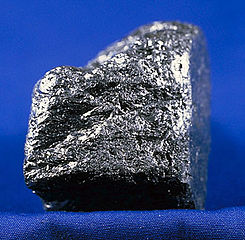 El grafito es una de las formas polimórficas en las que se puede presentar el carbono en la naturaleza. Otras formas son diamante, la chaoita y la lonsdaleita. A presión atmosférica y temperatura ambiente el polimorfo más estable es el grafito . Sin embargo, la transformación del diamante en grafito es tan extremadamente lenta que sólo es apreciable a escala geológica. Fue nombrado por Abraham Gottlob Werner en el año 1789. El término grafito deriva del griego γραφειν (graphein) que significa "escribir", ya que se usa principalmente para crear la punta de los lápices. Antiguamente recibía otros muchos nombres, como plombagina y "molibdena" (que no debe confundirse con el mineral molibdenita) Yeso El 'yeso', como material de construcción, es un producto elaborado a partir de un mineral natural denominado igualmente yeso o aljez (sulfato de calcio dihidrato: CaSO4·2H2O), mediante deshidratación, que una vez amasado con agua, puede ser utilizado directamente. Se le puede añadir otras sustancias químicas para modificar sus características de fraguado, resistencia, adherencia, retención de agua y densidad. También, se emplea para la elaboración de materiales prefabricados. El yeso, como producto industrial, es sulfato de calcio hemihidrato (CaSO4·½H2O), también llamado vulgarmente "yeso cocido". Se comercializa molido, en forma de polvo. Una variedad de yeso, denominada alabastro, se utiliza profusamente, por su facilidad de tallado, para elaborar pequeñas vasijas, estatuillas y otros utensilios.
Lista de cada recurso Carbon 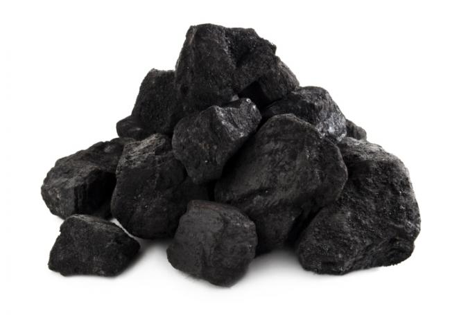 El carbón o carbón mineral es una roca sedimentaria organógena de color negro, muy rica en carbono y con cantidades variables de otros elementos, principalmente hidrógeno, azufre, oxígeno y nitrógeno, utilizada como combustible fósil.1 La mayoría del carbón explotado se formó a partir de los vegetales que crecieron durante los períodos Carbonífero (hace 359 a 299 millones de años) y Cretácico, al ser ambos períodos de gran extensión temporal y situarse gran parte de los medios sedimentarios favorables para su acumulación y conservación en latitudes intertropicales.2Es un recurso no renovable. Petroleo 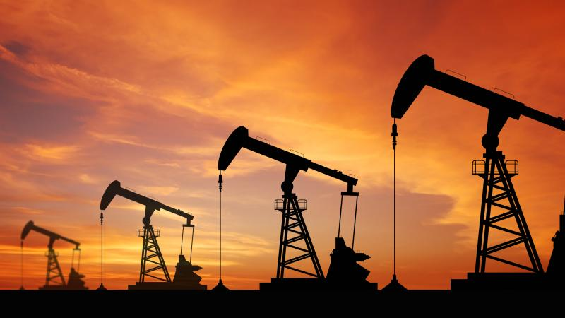 El petróleo es una mezcla de compuestos orgánicos, principalmente hidrocarburos insolubles en agua. También es conocido como oro negro, petróleo crudo o simplemente crudo. Aunque se desconocen los procesos químicos involucrados en su formación, se puede decir que se produce en el interior de la Tierra, por transformación de la materia orgánica acumulada en sedimentos del pasado geológico y puede acumularse en trampas geológicas naturales, de donde se extrae mediante la perforación de pozos.
El carbón o carbón mineral es una roca sedimentaria organógena de color negro, muy rica en carbono y con cantidades variables de otros elementos, principalmente hidrógeno, azufre, oxígeno y nitrógeno, utilizada como combustible fósil.1 La mayoría del carbón explotado se formó a partir de los vegetales que crecieron durante los períodos Carbonífero (hace 359 a 299 millones de años) y Cretácico, al ser ambos períodos de gran extensión temporal y situarse gran parte de los medios sedimentarios favorables para su acumulación y conservación en latitudes intertropicales.2Es un recurso no renovable.
El petróleo es una mezcla de compuestos orgánicos, principalmente hidrocarburos insolubles en agua. También es conocido como oro negro, petróleo crudo o simplemente crudo.
El gas natural es un hidrocarburo mezcla de gases ligeros de origen natural que contiene principalmente metano, y normalmente incluye cantidades variables de otros alcanos, y a veces un pequeño porcentaje de dióxido de carbono, nitrógeno, ácido sulfhídrico o helio. Se forma cuando varias capas de plantas en descomposición y materia animal se exponen a calor intenso y presión bajo la superficie de la Tierra durante millones de años.
El uranio es un elemento químico metálico de color plateado-grisáceo de la serie de los actínidos, su símbolo químico es U y su número atómico es 92. Por ello posee 92 protones y 92 electrones, con una valencia de 6. Su núcleo puede contener entre 142 y 146 neutrones, sus isótopos más abundantes son el 238U que posee 146 neutrones y el 235U con 143 neutrones. El uranio tiene el mayor peso atómico de entre todos los elementos que se encuentran en la naturaleza. El uranio es aproximadamente un 70 % más denso que el plomo, aunque menos denso que el oro o el wolframio
El agua subterránea representa una fracción importante de la masa de agua presente en los continentes, y se aloja en los acuíferos bajo la superficie de la Tierra. El volumen del agua subterránea es mucho más importante que la masa de agua retenida en lagos o circulante, y aunque menor al de los mayores glaciares, las masas más extensas pueden alcanzar un millón o más de kilómetros cuadrados (como el Acuífero Guaraní). El agua del subsuelo es un recurso importante y de este se abastece a una tercera parte de la población mundial,1 pero de difícil gestión, por su sensibilidad a la contaminación y a la sobreexplotación.
Estructura de un puente en hierro. El hierro o fierro12 es un elemento químico de número atómico 26 situado en el grupo 8, periodo 4 de la tabla periódica de los elementos. Su símbolo es Fe (del latín fĕrrum)1 y tiene una masa atómica de 55, 847u.34 Este metal de transición es el cuarto elemento más abundante en la corteza terrestre, representando un 5 % y, entre los metales, solo el aluminio es más abundante; y es el primero más abundante en masa planetaria, debido a que el planeta en su núcleo, se concentra la mayor masa de hierro nativo equivalente a un 70 %. El núcleo de la Tierra está formado principalmente por hierro y níquel en forma metálica, generando al moverse un campo magnético. Ha sido históricamente muy importante, y un período de la historia recibe el nombre de Edad de Hierro.
La plata es un elemento químico de número atómico 47 situado en el grupo 11 de la tabla periódica de los elementos. Su símbolo es Ag (procede del latín: argentum, "blanco" o "brillante"). Es un metal de transición blanco, brillante, blando, dúctil, maleable. Se encuentra en la naturaleza formando parte de distintos minerales (generalmente en forma de sulfuro) o como plata libre. Es muy común en la naturaleza, de la que representa una parte en 5 mil de corteza terrestre. La mayor parte de su producción se obtiene como subproducto del tratamiento de las minas de cobre, zinc, plomo y oro.
El cobre cuyo símbolo es Cu, es el elemento químico de número atómico 29. Se trata de un metal de transición de color rojizo y brillo metálico que, junto con la plata y el oro, forma parte de la llamada familia del cobre, se caracteriza por ser uno de los mejores conductores de electricidad (el segundo después de la plata). Gracias a su alta conductividad eléctrica, ductilidad y maleabilidad, se ha convertido en el material más utilizado para fabricar cables eléctricos y otros elementos eléctricos y componentes electrónicos.
El oro es un elemento químico de número atómico 79, que está ubicado en el grupo 11 de la tabla periódica. Es un metal precioso blando de color amarillo. Su símbolo es Au (del latín aurum, ‘brillante amanecer’). Es un metal de transición blando, brillante, amarillo, pesado, maleable y dúctil. El oro no reacciona con la mayoría de los productos químicos, pero es sensible y soluble al cianuro, al mercurio, al agua regia, al cloro y a la lejía. Este metal se encuentra normalmente en estado puro, en forma de pepitas y depósitos aluviales. Es un elemento que se crea gracias a las condiciones extremas en el núcleo colapsante de las supernovas
Es un metal de transición de color blanco con un ligerísimo tono amarillo, conductor de la electricidad y del calor, muy dúctil y maleable por lo que se puede laminar, pulir y forjar fácilmente, y presentando ferromagnetismo a temperatura ambiental. Es otro de los metales muy densos como el hierro, iridio y osmio. Se encuentra en distintos minerales, en meteoritos (aleado con hierro) y, en principio, hay níquel en el interior de la Tierra principalmente en su núcleo, donde se trata del segundo metal más abundante por detrás del hierro, metal con el que comparte numerosas características similares.
En la mineralogía, el diamante (del griego antiguo αδάμας, adámas, que significa invencible o inalterable) es un alótropo del carbono donde los átomos de carbono están dispuestos en una variante de la estructura cristalina cúbica centrada en la cara denominada «red de diamante». El diamante es la segunda forma más estable de carbono, después del grafito; sin embargo, la tasa de conversión de diamante a grafito es despreciable a condiciones ambientales. El diamante tiene renombre específicamente como un material con características físicas superlativas, muchas de las cuales derivan del fuerte enlace covalente entre sus átomos. En particular, el diamante tiene la más alta dureza y conductividad térmica de todos los materiales conocidos por el ser humano. Estas propiedades determinan que la aplicación industrial principal del diamante sea en herramientas de corte y de pulido además de otras aplicaciones.
El platino es un elemento químico de número atómico 78, situado en el grupo 10 de la tabla periódica de los elementos. Su símbolo es Pt. Se trata de un metal de transición blanco grisáceo, precioso, pesado, maleable y dúctil. Es resistente a la corrosión y se encuentra en distintos minerales, frecuentemente junto con níquel y cobre; también se puede encontrar como metal. Se emplea en joyería, equipamiento de laboratorio, contactos eléctricos, empastes y catalizadores de automóviles.
El grafito es una de las formas polimórficas en las que se puede presentar el carbono en la naturaleza. Otras formas son diamante, la chaoita y la lonsdaleita. A presión atmosférica y temperatura ambiente el polimorfo más estable es el grafito . Sin embargo, la transformación del diamante en grafito es tan extremadamente lenta que sólo es apreciable a escala geológica. Fue nombrado por Abraham Gottlob Werner en el año 1789. El término grafito deriva del griego γραφειν (graphein) que significa "escribir", ya que se usa principalmente para crear la punta de los lápices. Antiguamente recibía otros muchos nombres, como plombagina y "molibdena" (que no debe confundirse con el mineral molibdenita)
El 'yeso', como material de construcción, es un producto elaborado a partir de un mineral natural denominado igualmente yeso o aljez (sulfato de calcio dihidrato: CaSO4·2H2O), mediante deshidratación, que una vez amasado con agua, puede ser utilizado directamente. Se le puede añadir otras sustancias químicas para modificar sus características de fraguado, resistencia, adherencia, retención de agua y densidad. También, se emplea para la elaboración de materiales prefabricados. El yeso, como producto industrial, es sulfato de calcio hemihidrato (CaSO4·½H2O), también llamado vulgarmente "yeso cocido". Se comercializa molido, en forma de polvo. Una variedad de yeso, denominada alabastro, se utiliza profusamente, por su facilidad de tallado, para elaborar pequeñas vasijas, estatuillas y otros utensilios.
Video acerca de los Recursos no Renovables
Los recursos no renovables que existen en Mexico se dividen en combustibles,no metales,metales. En nuestro país, aunque abundan estos recursos, no debemos descuidarlos. Se clasifican en minerales metálicos y no metálicos, además de combustibles. Entre los minerales metálicos tenemos: 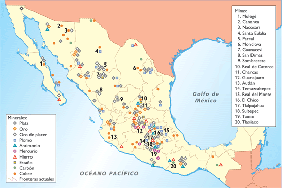 oro plata cobre hierro plomo No metálicos tenemos: marmol granito caliza sal En combustibles tenemos: petroleo carbon hulla
Entre los minerales metálicos tenemos:
No metálicos tenemos:
En combustibles tenemos:
¨ BIENVENIDO ¨ Si se puede imaginar ,se puede crear ;